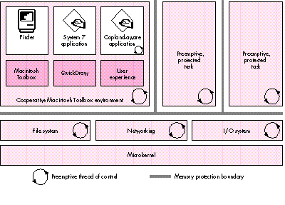
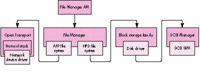

The Macintosh operating system has continually evolved since the days when the
Macintosh was a home appliance with 128K of RAM and a floppy disk drive -- but now
the time has come for radical change. The next generation of the Mac OS, code-named
Copland, was designed specifically to serve computers with a fast processor running
several tasks and processing large quantities of data. This preview describes Copland's
major features and suggests how you might get ready for it.
Since the first Macintosh operating system and Toolbox were developed in the early
1980s, the needs of users and developers alike have evolved significantly. Newer
technologies, such as MultiFinder and the PowerPC(TM) processor, have appeared on
the scene. Users have come to expect greater ease of use, more capabilities, and
enhanced productivity. Although the Mac OS has evolved along with the times, a more
radical advance is now required to take advantage of the great increases in power
afforded by the PowerPC processor.
Enter Copland, a new generation of the Mac OS to be released by Apple in mid-1996.
Copland will provide a radically new architecture that includes technologies such as
preemptive multitasking and protected memory. For one thing, it's based on a
microkernel that moderates between individual tasks and arbitrates access to the
machine's resources. A number of other services have been updated and improved, both
to fulfill the requirements this change implies and to take advantage of the new
capabilities it provides. For example, the file system has been updated to be accessible
from several processes running simultaneously in several address spaces. Similarly,
the networking system has been enhanced, as have a number of the auxiliary operating
system managers such as the Process Manager.
With Copland will also come a number of enhancements to the user experience,
including a Finder that can perform several tasks simultaneously, changes to the
appearance and feel of the interface, and advances that will make it easier to locate and
access information. (See "Moving the Mac OS Interface Into the Future" for more
details.) All of this new functionality is glued together in a runtime model based on the
Code Fragment Manager, the dynamically linked library mechanism introduced with
the first Power Macintosh computers.
______________________________
MOVING THE MAC OS INTERFACE INTO THE FUTURE
BY B. WINSTON HENDRICKSON
Copland will not only radically change the foundation of the Mac OS, it will also
introduce some of the most significant changes to the user experience since
1984. For the user, this means new personalization capabilities, built-in
assistance with tasks, and improved access to information. For the developer,
it means a robust foundation for constructing consistent and compelling
interfaces that are easier to use.
The new managers in Copland directly concerned with enhancing the user
experience are the Appearance Manager, the Assistance Manager, and
Navigation Services. The following brief descriptions of these will give you an
inkling of things to come.
THE APPEARANCE MANAGER
The Appearance Manager defines how standard user interface elements should
be presented and enables users to personalize the appearance of these elements
by choosing one of a number of graphical designs called themes. Applications
can use the Appearance Manager's capabilities to draw custom interface
elements in the style of the current theme.
The Appearance Manager provides you with
To prepare now for Copland's dynamic system appearance, be sure not to make
assumptions about interface specifics (such as assuming that the dialog or
menu background is white). Also, don't hard-code the appearance of your
application's interface elements; for instance, avoid the use of custom
definition procedures wherever possible.
THE ASSISTANCE MANAGER
The Assistance Manager supports the implementation of active user assistance,
enabling the computer to accomplish specific tasks with little or no direction
from the user. The Assistance Manager provides support for the following:
Since this active assistance is built on existing technologies, you can start to
prepare for it today. The first and most important step is to make your
application scriptable, so that it can be automated. Second, you should provide
task-based assistance using Apple Guide. Finally, if your application provides
any task delegation, you should factor out the related code now so that you can
take advantage of the Assistance Manager under Copland.
NAVIGATION SERVICES
Navigation Services replaces System 7's Standard File Package, providing a
set of tools for opening, saving, and naming documents as well as for
navigating a hierarchical information space containing such documents. These
tools will increase consistency between applications and the Finder and will
enable integration with the Finder's new and improved searching mechanism.
The new capabilities provided by Navigation Services include these:
You can do a few things now to get ready for Navigation Services. First, when
customizing the Standard File dialog, render only inside your dialog items, as
they may be rearranged. Second, don't assume you're drawing into the desktop
port, because you won't be. And finally, don't try to control Standard File by
posting events to dialog items; use the documented interface instead. Because of
the large number of advances and changes in Copland, some software will be
incompatible. For instance, applications that have inappropriately incestuous
relationships with the operating system might run into problems. But there
are some things you can do now to prepare yourself for this release and ensure
that your applications will be as compatible as possible. I'll tell you about
those things as I give you a tour of Copland's microkernel, runtime model, File
Manager, and I/O architecture.
______________________________
The present Macintosh operating system is somewhat too trusting: it doesn't take
charge of restricting software's actions or balancing the use of the machine's
resources. Any piece of code can write all over memory, retain control forever, and
even turn off interrupts for any period of time. This model, while once appropriate,
has shortcomings in a computer with a fast processor running several tasks and
processing large quantities of data.
That's where Copland's microkernel, developed by Apple specifically for use in the
Mac OS, comes in. The microkernel serves as a referee for the system. It moderates
between many individual tasks so that none can hog the processor and so that special
code need not be implemented to share it. It also arbitrates access to the machine's
resources, including memory, preventing software from being able to see or change
data unrelated to its task.
The microkernel provides a number of services -- most of them familiar to those
conversant with kernel-based systems -- including task control, address space
management, virtual memory management, interrupt control, synchronization
primitives, and intertask messaging. These services, which we'll look at in more detail
in the following pages, serve as the basic building blocks of the system. In most cases,
your software won't use any of these kernel services directly but will instead take
advantage of them through other APIs -- APIs that are part of System 7 but that have
been reimplemented in Copland.
TASK CONTROL
The Copland kernel provides full support for a variety of tasking services. While
applications will normally be cooperatively scheduled by the Process Manager (just as
in System 7), applications will also be able to create tasks that are preemptively
scheduled. Preemptive tasks are scheduled in the order of their assigned priority and
according to kernel scheduling rules; the Process Manager doesn't manage them in the
way it does applications. Such tasks behave as threads behave in other systems. At any
time, almost anything in the system -- including the currently running application
-- can be preempted to run such a task. Interrupt handlers can't be preempted,
however.
You'll be able to set the priority of preemptive tasks that you create; higher priority
tasks will run in preference to lower priority ones. By giving an I/O-intensive task
higher priority than your main application thread, you'll gain performance very
similar to that made possible today by chained completion routines. During the
relatively long I/O delays when your task is blocked, your main application thread
will execute freely. Whenever its I/O requests do complete, the task will regain
control immediately so that it can issue its next I/O request, resulting in maximum
throughput without unnecessary blocking of other computing tasks. Similarly, you'll
be able to assign a higher priority to general application tasks than to background
tasks that can afford to wait or proceed slowly while the machine is in use (such as a
background renderer for a network-distributed 3D software package). This will
ensure responsiveness in your application and allow you to use otherwise idle CPU
time.
Chained completion routines are discussed in the article "Asynchronous
Routines on the Macintosh" in develop Issue 13.
To prepare for this opportunity, you can work to make your application easier to
factor. If you remove dependencies between different portions of your application, it'll
be easier to take full advantage of Copland's multitasking capabilities. When a Copland
preemptive thread runs, the file system, networking, and device I/O will be available,
similar to the environment when a Time Manager or Deferred Task Manager task runs
in System 7. One addition is that synchronous calls can be made; your thread will just
block until the I/O has completed.
ADDRESS SPACE AND VIRTUAL MEMORY MANAGEMENT
In System 7.5, there's only one address space. A particular address always refers to
the same part of memory, and data located there can be accessed by every part of the
operating system. In Copland, by contrast, multiple address spaces can be created,
allowing code and data to be hidden from some processes. For compatibility reasons,
Macintosh applications will continue in this release to share a single address space,
while components of the operating system and third-party software can create fully
protected memory areas in which code that's not dependent on the Macintosh Toolbox
can execute. The kernel, the file system, and several other components will create
such areas to protect their private data structures.
Each address space is divided into areas. An area can be either private (accessible only
to tasks executing in that address space) or global (accessible at the same location in
all address spaces). In addition, an area can be either read/write to all tasks (most
global areas fit into this category) or read-only in user mode and read/write in
supervisor mode. (Most code runs in user mode; only code that needs special abilities,
such as drivers and parts of the operating system, runs in supervisor mode.) This
latter protection is used for most kernel and file system data structures; they're
located in global memory for fast and easy access (without the need to switch to
another address space) but can't be damaged by code executing in user mode. Only the
privileged clients of the system can change these structures.
In addition to having the ability to map RAM into a variety of address spaces, Copland
also uses virtual memory to provide more room than is available in physical RAM,
moving data between RAM and disk as needed. In fact, virtual memory is always on. It's
dramatically better than System 7's virtual memory in these ways:
Because Copland will make available a full gigabyte of address space in which to run
applications (subject, of course, to the limits imposed by the amount of disk space
available for paging), two other limitations of the System 7 memory allocation system
should be alleviated. First, Copland will reduce (though not entirely eliminate) the
need for the user to configure and reconfigure the application's memory partition to
accommodate changing needs. Also, problems with applications fragmenting the
available memory for launching more applications should be eliminated. Thus, no
longer will users always have to deal with the complex issues of memory allocation and
organization to make best use of their machines.
In addition to swapping space, Copland will support memory-mapped files. This
technology allows an application to map a file against an area of address space;
accessing locations in the address space causes the appropriate portions of the file to
be read into RAM. In system software version 7.1.2, this technology is used by the
system for paging PowerPC code when virtual memory is on, but it's not available to
applications. In Copland, it will be available to applications; data files can be mapped
for read-only or read/write access. An application will be able to read a document just
by walking through the address space without having to manually stream it into
buffers.
To be prepared for Copland's use of virtual memory, applications today should be able
to operate well in a virtual memory environment. For purposes of performance, this
means keeping a tight locality of reference; code that uses contiguous data structures
rather than structures spread all over memory will require fewer pages to be resident
for any operation. Also, take care when allocating variable-sized buffers. Don't always
attempt to allocate the largest possible buffer, sizing it down till it fits -- a popular
but potentially wasteful habit; instead, cap buffers at points beyond which they won't
gain from more RAM. For example, if reading a file, you might cap the size of a data
buffer at 64K, because there's little to gain by reading the file in larger chunks.
INTERRUPT CONTROL
On Power Macintosh computers running System 7.5, interrupts are handled by the
680x0 instruction emulator, incurring a large overhead. Even if the overhead of the
actual interrupt handler is small, a significant price is paid in invoking the emulator,
especially if a mostly native application is executing (in which case the emulator has
to be pulled into the cache on each interrupt, then flushed out as native code is reloaded
after the interrupt returns). Since a Macintosh can easily take several hundred
interrupts per second (thanks to interrupts caused by video retrace, the old-style VBL
Manager, ADB, and the like), this can have a significant performance impact.
By contrast, Copland's I/O system, including interrupt handlers, is entirely native;
this, along with an improved architecture, should mean significantly lower interrupt
latency and better overall performance. Because of the flexibility of the execution
control available to the kernel, it will be easy for an interrupt handler to do the
absolute minimum to deal with an interrupt (often all that's required is to
acknowledge it). After control is returned from the interrupt, another piece of code
called a secondary interrupt handler can be invoked; although under the same
constraints as a hardware interrupt handler, this handler results in the best system
performance by enabling the soonest possible exit from the hardware handler. If
significant processing needs to be done right away, this secondary handler can wake a
high-priority task to do that work, thus keeping the system from being bottlenecked
by any individual set of handlers.
Some native interrupt functionality will be delivered before Copland;
see the article "Creating PCI Device Drivers" in this issue of develop for more
information.
SYNCHRONIZATION AND INTERTASK MESSAGING
As mentioned earlier, applications under Copland will be able to create tasks that are
preemptively scheduled. You'll be able to assign priorities to your preemptive tasks,
but this in itself won't prevent the tasks from preempting each other at inopportune
times. What you'll need in order to ensure correct behavior from your tasks is a
mechanism to synchronize access to shared resources.
Copland provides several synchronization mechanisms, each useful in a different
situation. Any operating systems textbook includes a variety of them, and most can be
implemented in combination with others. The ones implemented in Copland -- atomic
operations, simple locks (mutual exclusions, or mutexes), read/write locks, event
flags, and event queues -- are meant to efficiently solve problems common in
Macintosh applications and the Mac OS and to provide building blocks to implement
other synchronization mechanisms if necessary.
The kernel also has an intertask message system that provides data transfer as well as
synchronization, although for basic synchronization of shared data it's probably more
than you'll need. It can move arbitrary amounts of data across address spaces
synchronously or asynchronously, by value or by reference. In cases in which the
system uses messages to implement functionality, the message will be hidden inside an
API library, so you generally won't have to deal with the details of how the message
system works.
Copland's runtime model is based on the Code Fragment Manager (CFM). Instead of a
monolithic binary file, the operating system consists of a number of individual
libraries that combine to provide the API and system functionality. This mechanism
allows software to be built in a much more modular fashion. In addition, the CFM
provides a much more consistent context and activation model than does the statically
linked, trap-dispatched runtime model used in 680x0-based computers. Rather than
having to be concerned with setting up and restoring the A5 register to provide access
to data when executing in an interrupt task, the CFM provides a standardized transition
to make sure the data appropriate to the executing code is always available.
Although applications under Copland will continue to be cooperatively scheduled within
a single address space, developers can, as already mentioned, use kernel services to
create tasks that take advantage of preemptive multitasking and protected memory.
Tasks running in address spaces outside the Toolbox will have a limited number of
services available to them, similar to those available to background-only applications
in System 7: they'll be able to allocate memory, communicate with other processes,
and use the kernel services, the file system, and the network, but they won't be able to
draw on the screen or interact directly with the user. Tasks that are I/O or
computation intensive running in separate address spaces will get the benefits of
preemptive multitasking, and protected memory will separate these tasks from
applications, providing an increased level of stability and reliability.
For example, Copland will include an implementation of the personal file sharing
server that runs in a separate address space. This allows the server -- which takes
networking traffic and converts it to file system calls, serving files from the local
drive to remote clients -- to share the system with the user and foreground processes
as efficiently as possible. It will use concurrent I/O to interleave its requests with
those of foreground processes, and it will get compute time at any moment when the
processor is otherwise idle, even if the foreground process is waiting for a page fault
to be completed.
Figure 1 illustrates Copland's architecture, showing the separation between the
Toolbox environment, other tasks, and the operating system. Core portions of the
operating system such as the kernel and the file system run in an address space that's
protected from the Toolbox environment and other processes; similarly, the Toolbox
environment is protected from other applications running in their own address spaces.
Each of these areas, including the kernel and other services, can have one or several
threads of execution; the kernel preemptively switches between them. Some services,
such as the file system, can have several active threads of control, each responsible
for a single outstanding file system request. All applications running in the Toolbox
environment, including the Finder, run as a single task, inside a single address space.
However, Copland-aware applications can use preemptive threads to best handle CPU-
and I/O-intensive tasks.

Figure 1. The Copland architecture
With the new runtime model will come a number of new ways to monitor and modify
system operations without patching, which is clunky and difficult to maintain.
Currently, extensions have no formal presence in the system; they live in the cracks
between the system and applications. By providing a better-defined environment for
extensions, Copland will make them easier to write and more stable. For example,
extensions currently must patch the file system -- or use the inefficient alternative
of polling -- if they need to track file usage; the new File Manager will let software
install notification procedures that can be called whenever a particular event, such as
creating or renaming a file, occurs. Patching will still be available; a new Patch
Manager will allow software to patch CFM entry points and will give much more
control over the installation and removal of patches, including where they fall in the
chain of execution.
To run under Copland, extensions you've developed will need to be revised. You'll make
the transition easier for users if your applications that ship with extensions are able
to run without these extensions installed. Also, desk accessories will no longer be
supported in Copland; if you depend on any desk accessories, you should rewrite them
as small applications.
When the Macintosh was first introduced, it had a flat file system that was appropriate
only for floppy disks. Since then, a number of advances have been made, including the
introduction of the hierarchical file system (HFS) in 1986. But the System 7 File
Manager has these limitations:
Copland will introduce a new File Manager that addresses these limitations, directly or
indirectly. For instance, the new File Manager has been divorced from HFS
implementation details and thus imposes no limitations on volume formats; arbitrary
volume formats can be developed and plugged in. This will allow the Macintosh to
properly support any file system, including ones that feature larger volumes, more
files, or larger files than the HFS disk format. It will even be possible to create
components that provide access to distributed network file systems or other data
stores that don't easily map onto the HFS block storage model. In fact, HFS itself will
be implemented as one of these plug-in modules.
The new File Manager will also support concurrent data transfer, so that several file
system requests can be in progress at any one time. This will dramatically increase
throughput in a number of cases. For example, copying files from a fast file server to
a hard drive now involves an entirely serialized read over the network followed by a
write to the hard drive; in Copland, the read and write operations can be overlapped,
so the copy can be completed in as little as half the time. Throughput will even be
increased in cases where two accesses share a communications channel, such as
transfers involving several devices on the local SCSI bus or several file servers,
because most communications channels won't be filled by a single device. A significant
portion of the time it takes to read or write data to a SCSI disk is spent waiting for the
disk, not actually transferring data; in the new model, that time can be used to
transfer data to or from a different device.
Another real enhancement to the file system is the introduction of a new API, designed
to be easy to learn and use. A new API was necessary because the new file system
supports files and volumes larger than 231 bytes, meaning that more than 32 bits are
needed to store various values. The System 7 File Manager API has already been
through several stages of evolution, from the original file system calls through the
HFS calls to the calls taking FSSpecs in System 7; the new API is in lieu of reworking
it one more time. In addition, the HFS API is composed of a number of calls that take
huge parameter blocks where it isn't obvious which fields need to be set to what at any
moment; wherever possible in the new API, parameter blocks have few fields and can
easily be reused.
With Copland comes a new I/O architecture designed with the following objectives in
mind:
The I/O architecture is organized around a number of services, each of which can be
associated with a set of drivers in a unit known as a family. For example, the SCSI
Manager can be associated with a number of SCSI interface modules (SIMs), each of
which describes a single SCSI bus. Similarly, each of the drivers in the block storage
family can provide block storage functionality to a file system agent. Drivers in the
volume format family (through the File Manager) will manage a number of volume
format agents, including the HFS agent.
Thus, the I/O architecture is structured in a hierarchy of layered components, which
pass control and data among themselves. For example, an application might make a file
system call, which would be passed to the HFS file system agent, which would then
make a request of the appropriate block device driver. That driver could then use the
SCSI Manager to transfer data to a SIM, over a SCSI bus, to a specific SCSI device. This
modularity means that other data flows are easily constructed. For example, the file
system request might be passed to an AFP file system agent, which would result in data
being transferred over the network using Open Transport. (AFP stands for AppleTalk
Filing Protocol -- the protocol used to talk to AppleShare file servers.) These
relationships are diagrammed in Figure 2.

Figure 2. An example of relationships and control flow in the new driver model
This layered architecture permits a flexible dependency chain, where no component
has too much knowledge about the implementation details of its dependencies or its
clients. A block storage driver, for instance, doesn't need to know the details of the
SIM's SCSI bus implementation or which volume format it's being used for; it just
passes requests up and down the chain. This modular architecture should make it
easier for Apple and developers to introduce new ways of solving problems.
The driver model for PCI cards, described in this issue of develop in the article
"Creating PCI Device Drivers," was designed with this new I/O architecture in mind.
Copland will support drivers developed for PCI cards in accordance with the guidelines
presented in that article, so you would do well to familiarize yourself with them. Old
drivers will need to be revised because they read and write to hardware locations
directly; protection in the new kernel requires that this ability be reserved to
specially privileged software. But this doesn't mean that everything packaged into
Device Manager drivers will break. The Device Manager will continue to support code
packaged as a driver that doesn't actually touch hardware and that isn't otherwise
incompatible with Copland, such as drivers that some programs use for
interapplication communication.
Note also that Open Transport, which is now available for development on System 7.5,
will be the native networking protocol in Copland. Applications that use it will make
best use of the native networking stack and will be prepared to run in a separate
address space.
The transition to Copland will be the most significant operating system transition in
the history of the Macintosh. You can make this transition easier for yourself and
users if you do these things:
With its vastly expanded functionality, Copland will offer an unprecedented number of
new opportunities for developers. In providing a stronger foundation for third-party
products and future Mac OS releases, Copland will lay the groundwork for years of
advances on the Macintosh platform.
TIM DIERKS, who is known for having the messiest office on the Apple R&D campus,
has been bumming around Apple for several years, including stints working with the
Macintosh Developer Technical Support group as well as on the Copland project.
Currently, he's hard at work on Apple's interactive television solution, which gives
him an excuse for watching Rocco's Modern Life at work. He shares his office with two
lizards, a corn snake, and a pinball machine -- which helps explain at least some of
the mess.
Thanks to our technical reviewers Jeff Cobb, Dave Evans, John Iarocci, Wayne
Meretsky, Mike Neil, Steve Szymanski, and Russell Williams. Special thanks to
Russell Williams for information on synchronization services for preemptively
scheduled tasks.